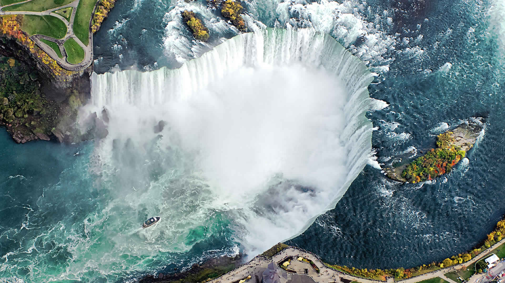
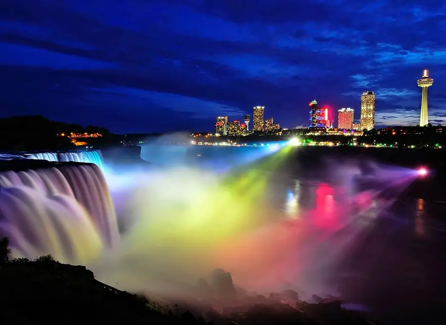
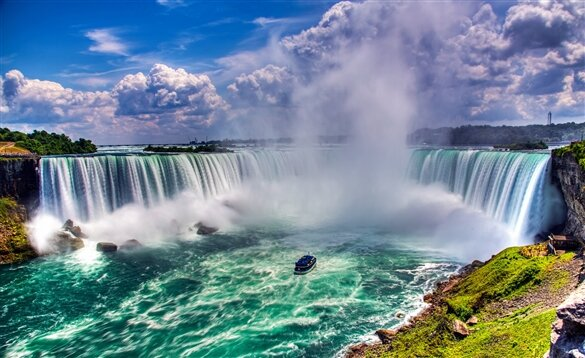
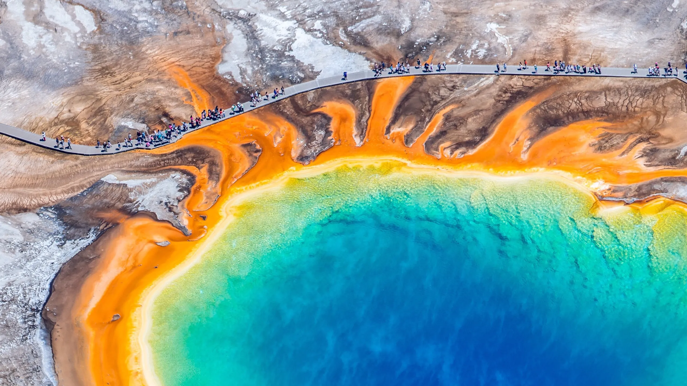
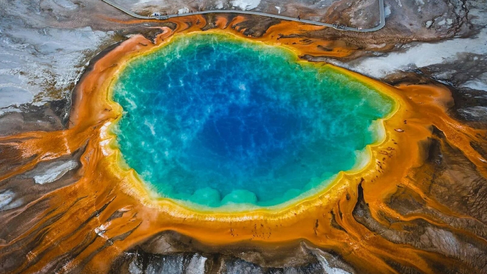
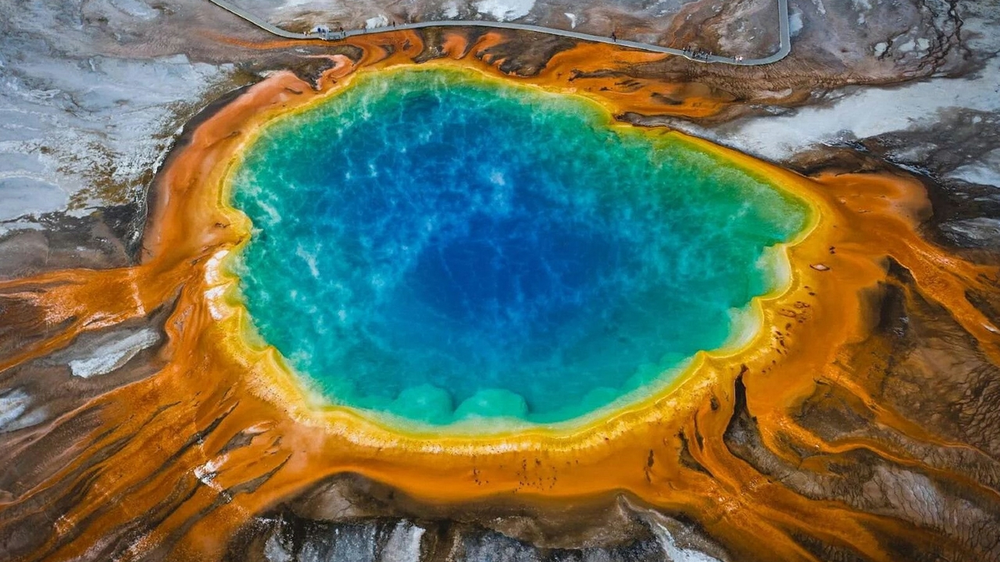
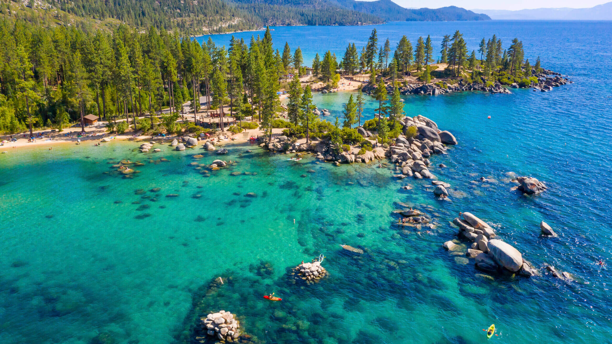
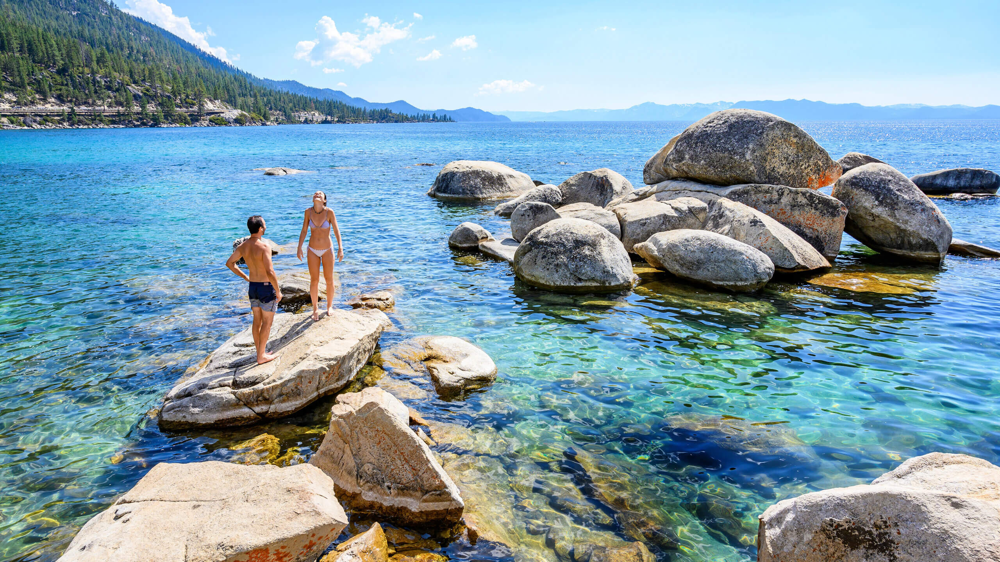
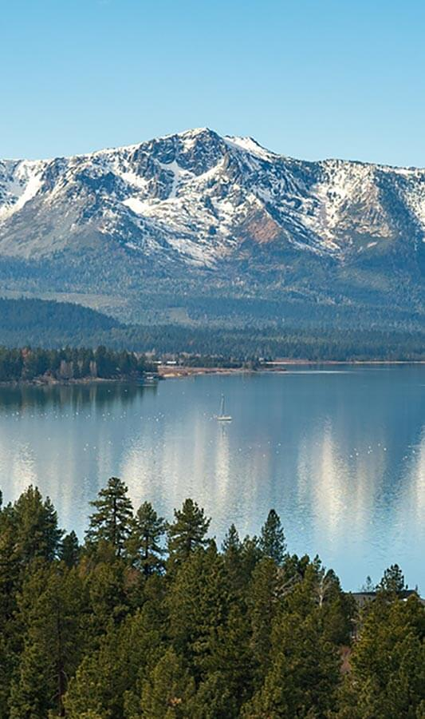

Travel
Niagara falls
Geographical location: North America
Niagara Falls is located on the border between Canada and the United States. Connecting Lake Erie and Lake Ontario, Niagara Falls has the highest flow rate of any waterfall in North America.
Photo gallery

Niagara Falls draws in thousands of visitors every year, and for good reason. As such, there are numerous things that you can see while you visit the falls, and it is very easy to make a full trip out of seeing this wonderful sight.

A visualization of the ‘Horseshoe’ part of the falls
The ‘Horseshoe’
Niagara Falls with a rainbow touching down in it
A rainbow in Niagara Falls
An orange sky overlooking Niagara Falls
A sunset at Niagara Falls
A distant look at Niagara Falls
Niagara Falls illuminated with colored lights
Martin Aschermann
Yellowstone
Photo gallery

A large mound of multi-colored travertine
Mammoth Hot Springs has a number of actively forming Travertine terraces.

Sunset over mountains with some charred trees in the foreground
The drive to Lamar Valley requires some dangerous roads. But the result is amazing sunset views.
Video
The multicolored layers get their hues from different species of bacteria living in the cooler water around the spring.
Yellowstone
The buffalo were so common along the roads in Yellowstone that our mantra became "If it ain't lickin the car, we aren't stopping."
 

A large spring with clouds of sulfur smoke rising from it.
If you can handle the odor, the Yellowstone Sulphur Springs is a great place to hike.
Martin Aschermann
Lake Tahoe
Geographical location: North America
“When it comes to things to do in South Lake Tahoe, you can shred down the mountain from 10,067 ft. at Heavenly Mountain Resort’s peak or you can dive into the depths of Lake Tahoe. It’s more than 1600 ft. deep, making it one of the deepest lakes in North America. Needless to say, there’s plenty of things to do in Lake Tahoe above and below the surface.”
“All parts of Lake Tahoe are beautiful and have something unique to offer. South Lake Tahoe is popular for its ski resorts like Heavenly, Sierra at Tahoe and Kirkwood ski resorts. South Lake Tahoe is also popular for its restaurants, shopping, casino resorts and vibrant nightlife.”
Photo gallery

Caption: Stateline Lake Tahoe

A visualization of the Lake Tahoe
Tahoe beach retreat aerial
Best thing to do in lake tahoe before summer ends.
A rainbow at Lake Tahoe
Hikers watching sunset
Visual description of the image (leave image for movies)

Lake Tahoe is a large freshwater lake in the Sierra Nevada Mountains, straddling the border of California and Nevada.
It’s known for its beaches and ski resorts.
Martin Aschermann